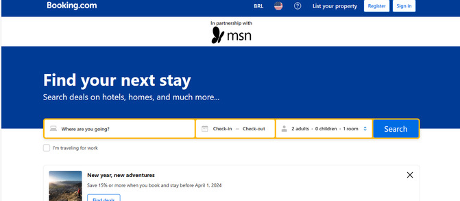
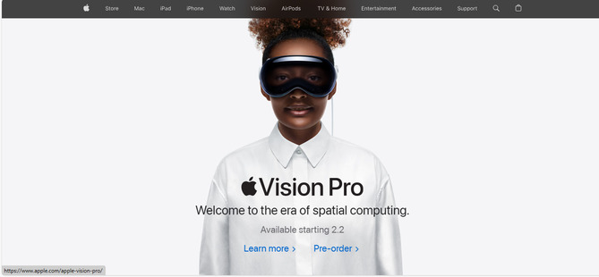

booking.com
The page exemplifies visual hierarchy through its bold headers that draw immediate attention, strategic color usage that highlights key elements, size and placement of elements to indicate their importance, and a clean, intuitive layout that guides the viewer's attention effectively.
Google’s homepage exemplifies Hick’s Law through its minimalist design that focuses on one main function - the search bar, thereby simplifying decision-making for users.
Apple
Apple’s website is another great example. It uses a lot of white space to highlight its products, creating a clean and minimalist look12.